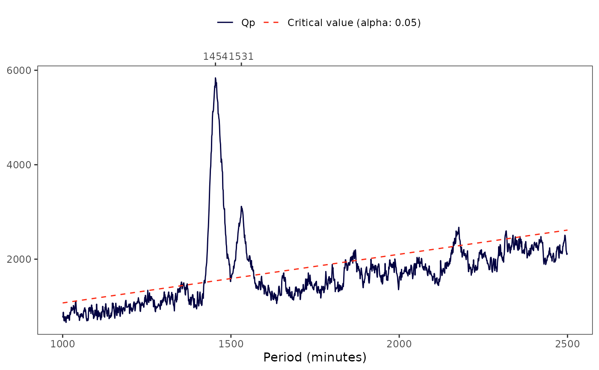

![[Experimental]](figures/lifecycle-experimental.svg)
periodogram() returns the Sokolove & Bushell's \(\chi^{2}\)
periodogram plot and measures for a tsibble object.
The \(\chi^{2}\) periodogram is a technique to identify periodic patterns in a time series, being used in chronobiology to identify the presence/absence of circadian periodicities in rest-activity data. It was proposed by Sokolove and Bushell (1978) as an adaptation of Enright's periodogram (1965), adding the peak significance test to the procedure.
periodogram(
data,
col,
p_unit = "minutes",
p_min = 1000,
p_max = 2500,
p_step = 1,
alpha = 0.05,
print = TRUE
)Arguments
- data
A
tsibbleobject.- col
A string indicating which column of
datato use.- p_unit
(optional) a string indicating at which time unit the index must be aggregated. By aggregating the index, this will change the time series interval and, consequently, its
pperiods. Valid values are:“seconds”,“minutes”,“hours”,“days”,“weeks”,“months”,“quarters”, and“years”) (default:"minutes").- p_min
(optional) an integer number indicating the minimum period (\(p\)), with the same unit as
p_unit, to compute the test (e.g., ifp_unit = "minutes",p_min = 1means a period of 1 minute) (default:1000).- p_max
(optional) an integer number indicating the maximum period (\(p\)), with the same unit as
p_unit, to compute the test (default:2500).- p_step
(optional) an integer number indicating the range of values that must be skipped between computing one test and the next (e.g., when
p_min == 1,p_max == 7, andp_step == 2, the test periods will be1,3,5, and7) (default:1).- alpha
(optional) a number, from
0to1, indicating the significant level (\(\alpha\)) required for the peak significance test (default:0.05).(optional) a
logicalvalue indicating if the function must print the \(Q_{p}\) plot (default:TRUE).
Value
A list object with the following elements:
p_unit: a string indicating the time unit in which the data was aggregated.p_seq: anumericobject with the the sequence of the tested periods.alpha: a number indicating the significant level used.a_p: anumericobject with the root mean square amplitude (\(A_{p}\)) for each period.a_p_plot: aggplotobject with a line chart showinga_p(y) byp_seq(x).q_p: anumericobject with the peak significant test (\(Q_{p}\)) for each period .q_p_critical: anumericobject with the \(\chi^{2}\) critical values for eachq_p, based on thealphaparameter.q_p_pvalue: anumericobject with the p-value for eachq_p, based on thealphaparameter.q_p_peaks: atibbleobject listing each period that peaked above the critical value along with itsq_p,q_p_critical, relativeq_p(q_p_rel = q_p_critical - q_p), andq_p_pvalue.q_p_plot: aggplotobject with a line chart showingq_p(y1) andq_p_critical(y2) byp_seq(x).
Details
Irregular intervals
Sokolove and Bushell's periodogram assumes that the time series is regular,
i.e., that it has regular intervals/epochs. periodogram() will still work
with slightly irregular time series, but only if the latter have at least a
90% prevalence of the same periodicity. Warning messages will be issued
telling the user if any data irregularities were found.
Data aggregation
If there's more than one data for each p_unit (e.g., when the data was
recorded per minute and the user wants to compute the periodogram per hour),
periodogram() will aggregate the values by averaging them or by assigning
the most frequent value (mode) (for non-numeric or single integer variables).
Missing values
periodogram() will work even with missing values. As is the case for
any analysis with missing data, the results may diverge. You may want to
interpolate these data points.
There are few articles that deals with interpolation in actigraphy. Tonon et
al. (2022) recommends not using interpolation (i.e., maintain NA values)
whenever is possible. The same authors also recommends using the weekly mean method of interpolation when the parameters
cannot be computed in the presence of NA values.
Guidelines
Enright (1965) and Sokolove & Bushell (1978) guidelines for the \(\chi^{2}\) periodogram computation are as follows.
Notes
If you are visualizing this documentation in plain text, you may have some trouble understanding the equations. You can see this documentation on the package website.
\(A_{p}\): The statistic adopted to express "importance"
periodogram() compute the \(A_{p}\) stat for each test period
\(p\), between the minimum determined by p_min argument and the maximum
p_max argument, at a step determined by p_step argument (e.g., when
p_min == 1, p_max == 5, and p_step == 1, the test periods will be
1, 2, 3, 4 and 5).
The \(A_{p}\) measure of Enright's periodogram is the standard deviation of column means of a Buys-Ballot table, or, as Enright puts it, "the root mean square amplitude". This Buys-Ballot table has \(P\) columns and \(m\) rows, where \(m\) is a number that maximizes the amount of values that a time series of \(N\) values can have represented in a \(P\) columns table (thus, \(m\) is \(N / p\) rounded down). \(m\) can be seen as a cycle, and the greater the similarity between the cycles and the difference between the columns, more intense will be the standard deviation (\(A_{p}\)).
Buys-Ballot table for an integral period \(p\):
P (count)
|------------------------------------------------| -
|
Row 1 X_1 X_2 ... X_P |
Row 2 X_P+1 X_P+2 ... X_2P | m (count)
... ... ... ... ... |
Row m X_P(m-1)+1 X_P(m-1)+2 ... X_Pm |
-------------------------------------------------- -
Totals U_P,1 U_P,2 ... U_P,P
Averages Y_P,1 Y_P,2 ... Y_P,P
As the table above shows, \(P\) is the number of columns in the array (matrix/table), while \(m\) is the number of rows. When \(p\) (test period) is an integer, \(p = P\). That way, \(A_{p}\) can be computed as:
$$A_{p} = \sqrt{\frac{\sum^{P}_{h = 1} (Y_{p, h} - \overline{Y}_{p})^{2}}{P}}$$
In which:
$$\overline{Y}_{p} = \frac{\sum^{P}_{h = 1} Y_{p, h}}{P}$$
\(Q_{p}\): Sokolove & Bushell's peak significance test
Plotting the \(A_{p}\) values allows you to identify the magnitude of the standard deviations for different \(p\)s. The higher the standard deviation the more it will tend to a peak. As these values are susceptible to high and instantaneous fluctuations, Sokolove & Bushell proposed adding a peak significance test, reducing the intensity of peaks by weighting the total variance of the data and the period in which it appears. In this process, peak moments will be highlighted among its neighbors, and smaller changes will lose prominence, tending to a constant variation from one period to another.
The significance test of the peaks given by \(A_{p}\) leads to a \(\chi^{2}\) distribution for each \(p\), with the test for a given \(p\) being consistent with a distribution of \(P - 1\) degrees of freedom.
The formula for calculating the test is:
$$Q_{p} = \frac{P \times Ap^{2}}{\sigma^{2}_{\overline{X}}}$$
In which:
$$\sigma^{2}_{\overline{X}} = \frac{\sigma^{2}_{X}}{m}$$
Where:
\(P\) = Number of columns of the test Buys-Ballot table.
\(m\) = Number of rows of the test Buys-Ballot table.
\(A_{p}\) = Standard deviation of the column averages from the test Buys-Ballot table.
\(\sigma^{2}_{\overline{X}}\)= Variance of the test data (\(X\)).
References
Enright, J. T. (1965). The search for rhythmicity in biological time-series. Journal of Theoretical Biology, 8(3), 426-468. doi:10.1016/0022-5193(65)90021-4 .
Sokolove, P. G., & Bushell, W. N. (1978). The chi square periodogram: its utility for analysis of circadian rhythms. Journal of Theoretical Biology, 72(1), 131-160. doi:10.1016/0022-5193(78)90022-x .
Tonon, A. C. et al. (2022). Handling missing data in rest-activity time series measured by actimetry. Chronobiology International. doi:10.1080/07420528.2022.2051714 .
See also
Other period analysis functions:
spectrogram()
Examples
# \dontrun{
if (requireNamespace("curl", quietly = TRUE) &&
requireNamespace("jsonlite", quietly = TRUE) &&
requireNamespace("tools", quietly = TRUE)) {
if (curl::has_internet()) {
file <- get_from_zenodo(
doi = "10.5281/zenodo.4898822", path = tempdir(),
file = "processed.txt"
)
data <- read_acttrust(file, tz = "America/Sao_Paulo")
per <- periodogram(data, "pim")
}
}
#> ℹ Downloading metadata
#> ✔ Downloading metadata [1s]
#>
#> ℹ Downloading file
#> ✔ Downloading file [15ms]
#>
#> ℹ Checking file integrity
#> ✔ Checking file integrity [26ms]
#>
#> ℹ Reading data
#> ✔ Reading data [380ms]
#>
#> ℹ Tidying data
#> ✔ Tidying data [667ms]
#>
#> ℹ Validating data
#> ℹ Found 2 gap in the time series: 2021-04-26 03:14:00/2021-04-26 03:14:00 and 2021-05-01 17:34:00/2021-05-01 17:34:00 (showing up to a total of 5 values).
#> ℹ Validating data
#> ℹ Found 21 offwrist blocks in the time series. All values were set as NA.
#> ℹ Validating data
#> ✔ Validating data [27.9s]
#>
#> ! data[[col]] has missing values. Results may diverge.
#> ■■■■■■■■■■■■■■■■■■■■■■■■■ 81% | ETA: 0s
#> ■■■■■■■■■■■■■■■■■■■■■■■■■■■■■■■ 100% | ETA: 0s
#>

# }